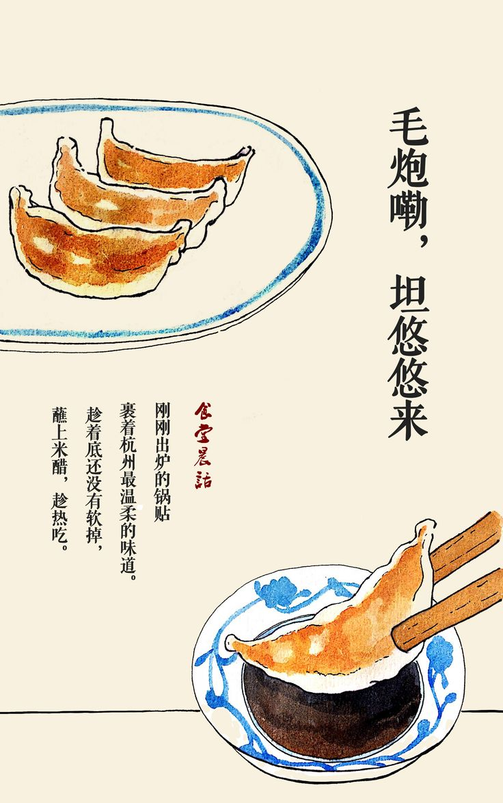

Gyoza
 KGyoza, also known as "potstickers" in English, is a popular Japanese dish that consists of dumplings
filled with a savory mixture of ingredients, typically ground pork, vegetables, and seasonings.
These dumplings are wrapped in thin dough and then pan-fried until crispy on the bottom while being steamed to cook the filling.
Ingredients
- 200g Napa Cabbage
- 200g of minced pork
- 2 chopped green onions
- 1 clove garlic
- 1 knob of ginger (2.5cm; grated)
- Gyoza Wrapper
- 1 tsp sake
- 1 tsp roasted sesame oil
- 1 tsp soy sauce
- 1/8 freshly ground black pepper
- 1 Tbsp rice vinegar
- 1 tsp sesame oil
Steps
-
Put 2cm of oil in a pan and heat it until 180°.
-
In the meantime, place the cutlet rinced & dried on a cutting board
and spread it a little by gently beating it with a rolling pit. Cut the side
of the meat every 1.5cm. Seasonthe meat with salt and pepper. -
Put the meat in the beaten eggs and in the panko.
-
Fry the cutlet (max 5min)
-
(Before dressing) Pre cut the tonkatsu so it is easier to eat.
-
In a frying pan, stir fry the onion, then deglace with soy sauce, mirin
and sugar. There should be some “juice” at the bottom on the pan. -
Lower the heat and pour the beaten egg on top of the onions, and briefly cover.
Cook the eggs as you like them. -
In a plate, place the cooked rice,
then the onions and the eggs and on the tonkatsu on top.